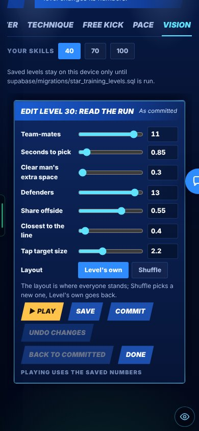
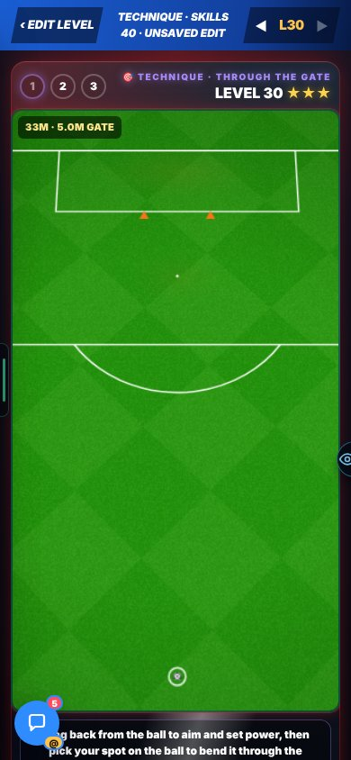
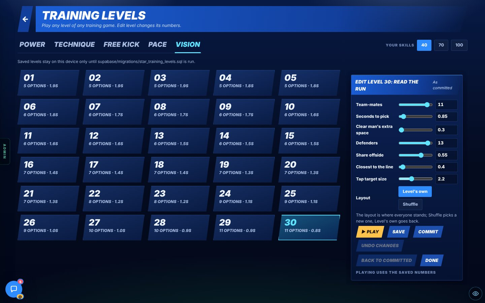
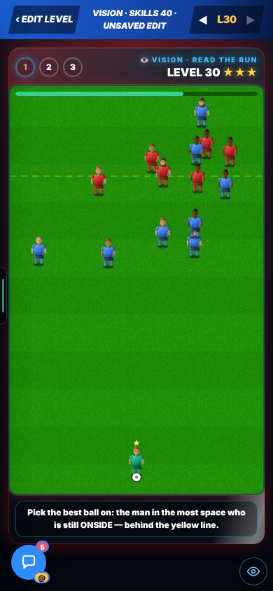
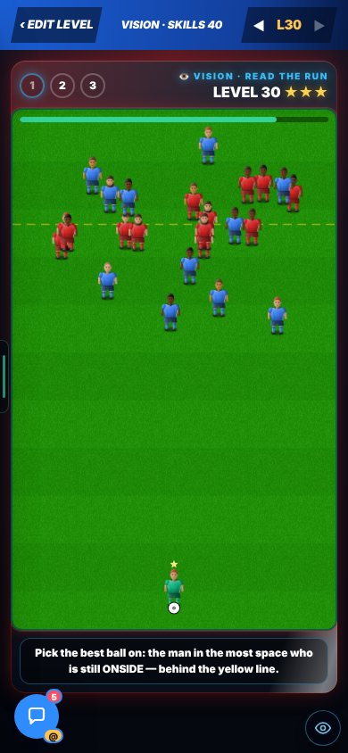

B7 · TRAINING LEVELS
All 150 training levels are now editable. Pace is harder at the top. Vision was rebuilt as Pick the Pass (B12).
On the Harry branch, not live yet.
Overnight round, 20 Oct 2026. In Admin → Patch notes this is v0.71.
CHECK THESE
ADDED
The 150 levels (5 drills × 30) could not be edited on a page. (Reasoned: the report says they are data now.)
Not in the report.
All 150 levels are data now. The Training levels page has an Edit panel for each level, like the gallery. It has sliders and number boxes, ▶ Play (plays at once), Save, Commit, Undo changes and Back to committed.
- Save writes to a shared table and to your device. Commit writes to the repo.
- Dots: amber = unsaved. Green = saved for everyone. Orange = on this device only.


More pictures (1): the same page on a computer

CHANGED
Harry, 20 Oct: “the vision skill is horrendous. It’s cluttered, and the skill gap doesn’t increase.” B7 had made the old level 30 harder (11 team-mates, 13 defenders, 0.85 s). That Vision is gone.
Harry said the old drill was cluttered, the skill gap did not grow, and he did not like the line on the pitch.
Vision is now Pick the Pass: real pictures of real passes, and the question is who gets the pass. Levels 1 to 9: tap the man. From level 10: kick the pass with the real drag and strike, and the engine judges the kick. The time to start the kick is 1.8 s at level 10 and 0.3 s from level 28. Full write-up: the B12 page.
It was 67% before B7. B7 made it 41%. The B12 rebuild made it 21%. After the rebuild: level 1 is 99%, level 10 93%, level 20 36%, level 25 28%. A modelled player, not a person.


Before: the old Vision, replaced by B12 (2 pictures)


From level 24 to level 30, 28% of runs were cleared. The same at every level.
Not in the report.
Now it climbs: level 20 clears 43%, level 25 clears 22%, level 30 clears 14%. Measured with a bot on the real run.
Not in the report.
The top levels are a bit harder and need placed shots.
NEXT
The editor uses sliders and number boxes. Harry wants it like the gallery: move the ball, the cones and the men, then Save. (Harry, 20 Oct.)
He also found the “your skills” sliders unclear, and Pace has no real skill element.
Queued as B7b. Harry answered (20 Oct, 09:45): no slider. A level plays with the skill you would have after finishing the levels before it. Pace gets a real skill element.
THE NUMBERS
The numbers, if you want them
Rebuilt Vision (B12), first-try pass rate (modelled good player, kicks played on the engine).
Old Vision (replaced by B12), first-try pass rate (modelled player). Grey is before. Colour is after.
Old Vision, level 30, the settings. Team-mates 8 → 11. Defenders 6 → 13. Seconds to pick 0.95 → 0.85. Tap area 3.2 → 2.2 m.
Pace, share of runs cleared (a bot on the real run). Before: a flat 28% from level 24 to 30. The report gives no “before” for level 20.
VIDEOS
Clips are filmed after the push and added to this page.
- An edited level playing (Technique level 30, 5 m gate).
SEEN / NOT SEEN
Seen on a screen
- The editor on a phone and on a computer
- ▶ Play of an edited Technique level 30 (5 m gate)
- Save says “on this device only”, and a reload kept the edit
- The rebuilt Vision on a phone: level 1 and level 30 (stills from B12)
- The old Vision level 30 before and after (stills, replaced by B12)
Measured (numbers)
- Old Vision level 30: first-try pass rate 67% → 41% (a modelled player). The rebuilt Vision is 21% (B12).
- Pace: 28% flat → 43% / 22% / 14% (a bot on the real run)
Reasoned, not seen
- Power, Free kick and Technique top levels: a bit harder, need placed shots
Not seen / not done
- Saving “for everyone”: the shared table needs the database file first
- A person playing the new Vision and Pace levels: not in the report
- Checked after: ▶ Play uses the numbers on screen. Before you save, the panel says “▶ Play uses these numbers before you save” and the level shows “Unsaved edit”; after saving it says “Playing uses the saved numbers”. Both pictures were taken with unsaved numbers, so they say “Unsaved edit”.